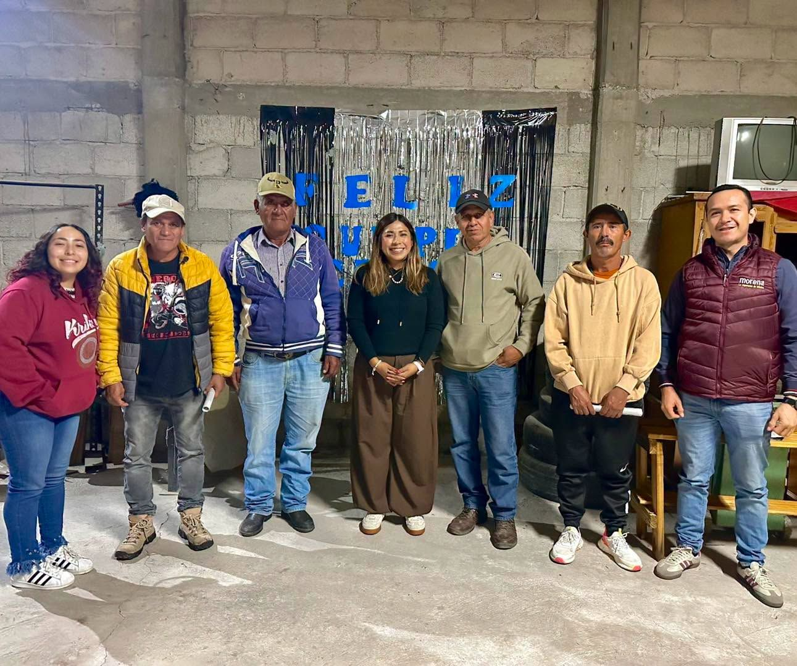
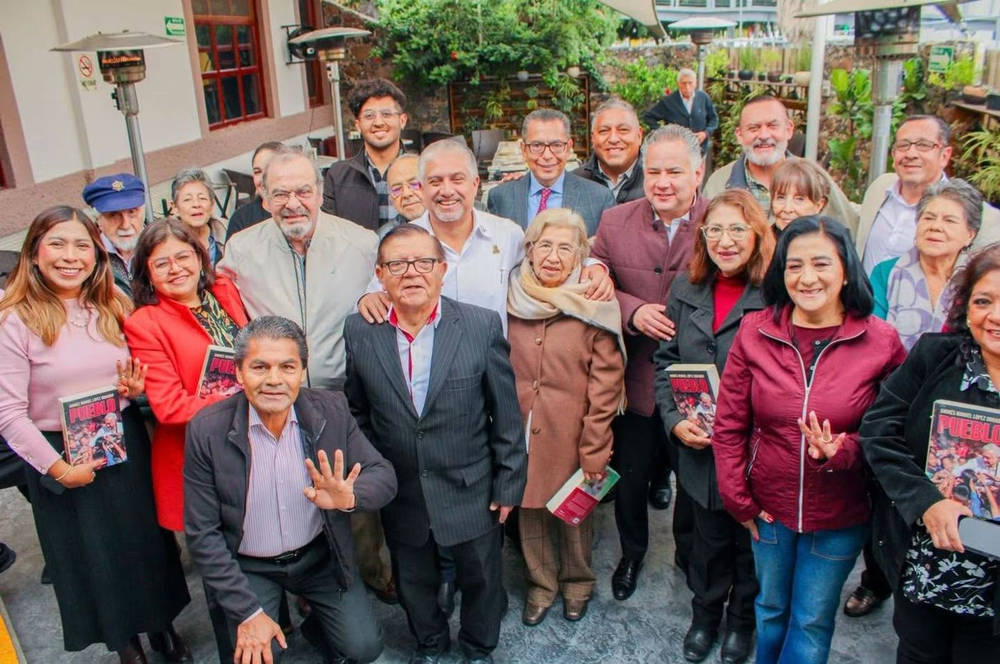
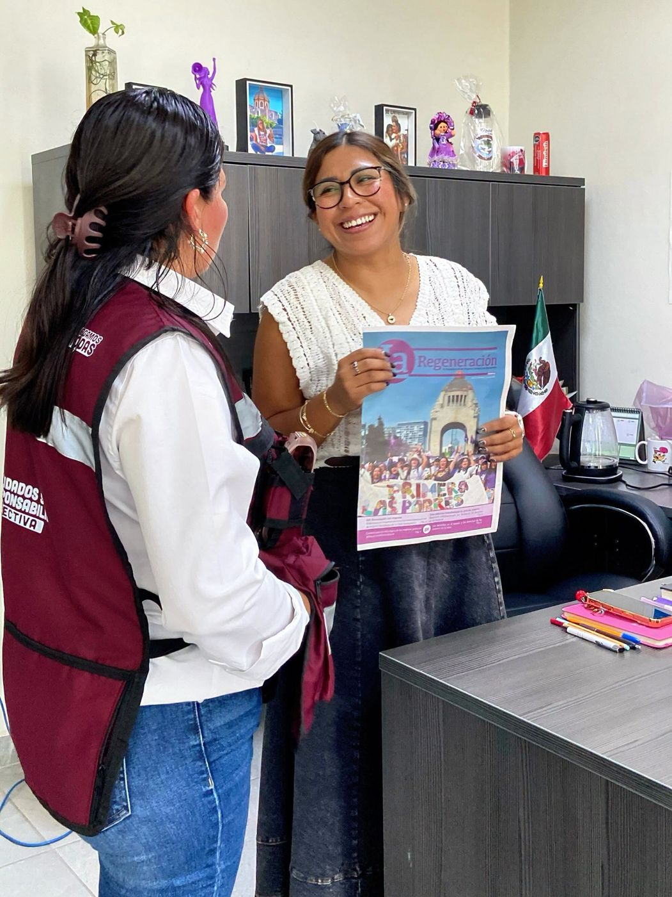

Una regidora cercana a su gente
Licenciada en Desarrollo Humano para la Sustentabilidad y Maestra en Administración de Negocios. Fundadora de Morena en El Marqués y hoy Presidenta de la Comisión de Educación y Cultura.
Quién soy
Mi formación, mi trayectoria y por qué decidí servir a El Marqués.
Leer más →Cabildo
Las comisiones que presido e integro, y las propuestas que impulso en el Ayuntamiento.
Ver comisiones →Territorio
Gestiones en las comunidades: escuelas, centros comunitarios, transporte y espacios naturales.
Recorrer →Últimas noticias
Actividades, recorridos y acuerdos más recientes.
Ver noticias →Lo que impulso
Educación como motor de cambio
Contacto permanente con las comunidades escolares para gestionar recursos y mejorar sus entornos.
Puertas abiertas
Atención personal a cada ciudadana y ciudadano, y acercamiento de los programas del Gobierno de México.
Desarrollo urbano y movilidad
Transparencia en los desarrollos inmobiliarios y mejor transporte para todo el municipio.
Sustentabilidad, cultura y género
Educación ambiental, protección de nuestro patrimonio natural y cultural, y prevención de la violencia.
Caminando El Marqués
Reuniones con vecinas y vecinos, atención en oficina y trabajo en comunidad.



Mis publicaciones más recientes
Todos los días comparto recorridos, gestiones y actividades con las comunidades de El Marqués. Sígueme para estar al tanto.
¿Tienes una petición o propuesta?
Mi oficina tiene las puertas abiertas. Escríbeme y con gusto atiendo, doy seguimiento o canalizo tu petición con el área que corresponda.
- Prensa: (442) 614 1762
- facebook.com/EliSanLuna
- H. Ayuntamiento de El Marqués, Querétaro